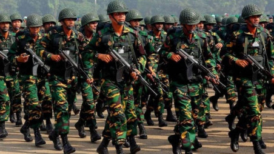
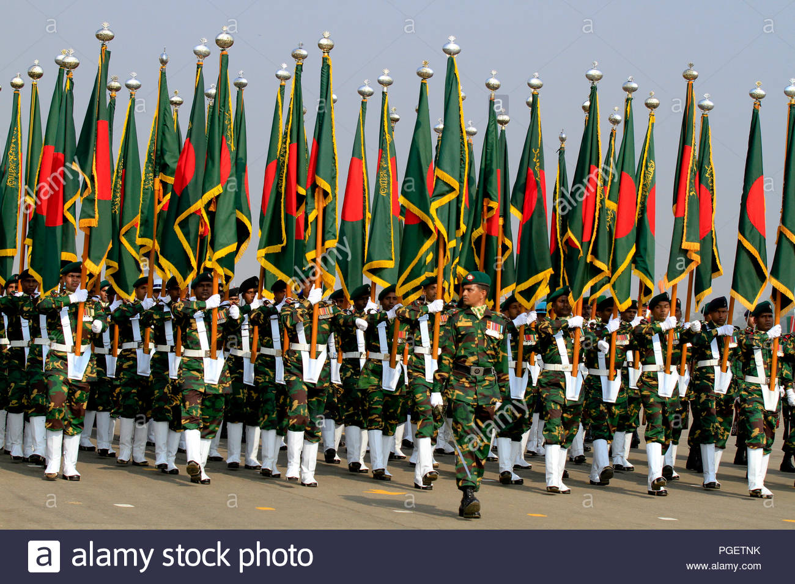
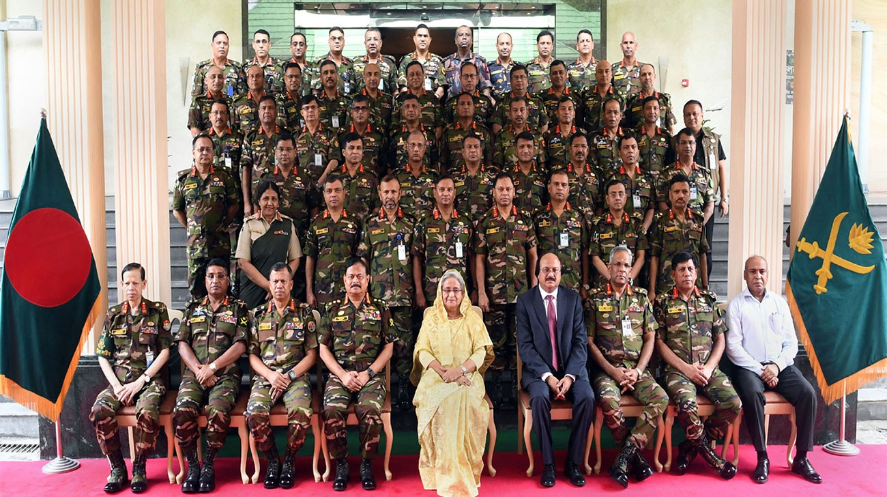
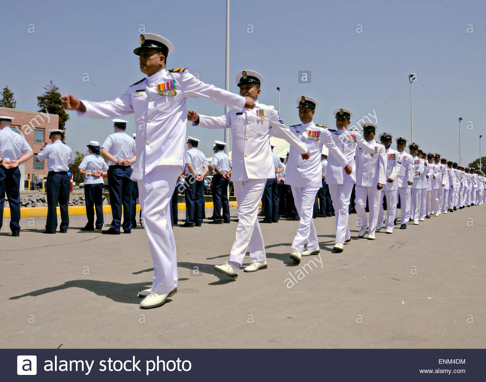
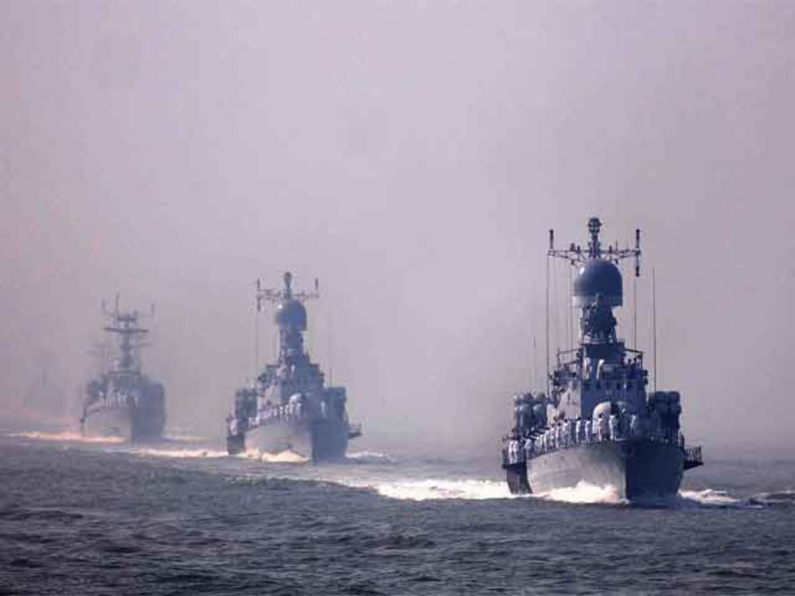
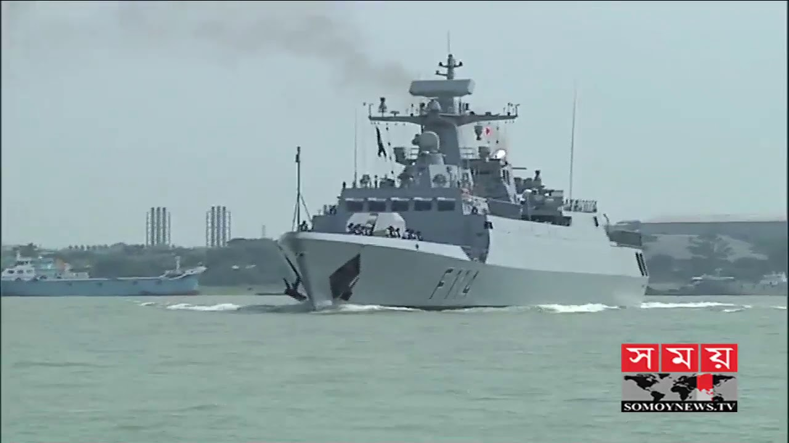
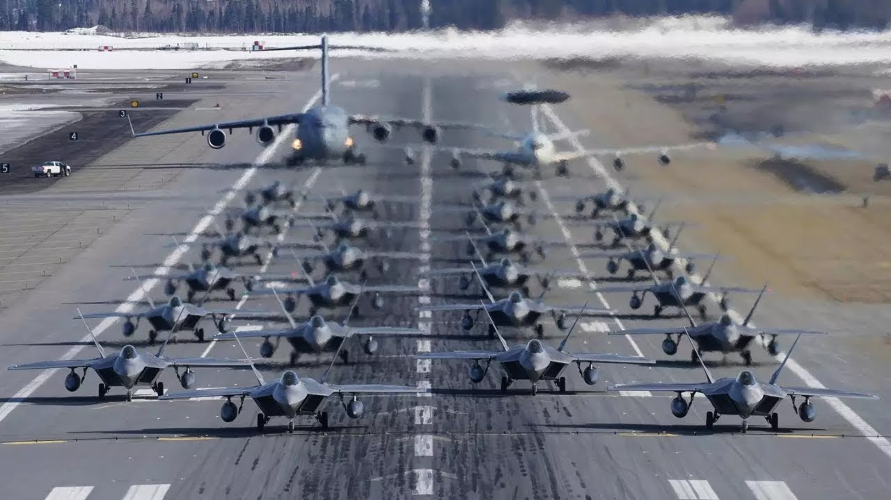
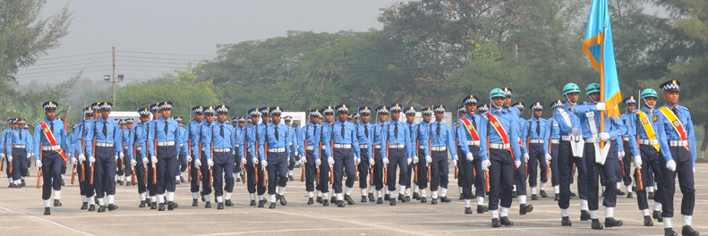
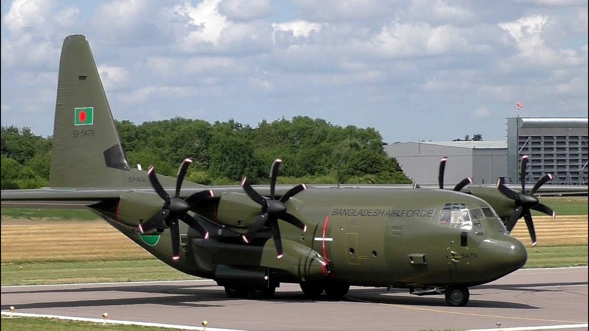

The Bangladesh Armed Forces (Bengali: বাংলাদেশ সশস্ত্র বাহিনী, romanized: Bangladesh Shoshostro Bahinī) consists of the three uniformed military services of Bangladesh: the Bangladesh Army, the Bangladesh Navy and the Bangladesh Air Force. Armed forces falls under the jurisdiction of Defence Ministry. The Border Guard Bangladesh (formerly Bangladesh Rifles) and Bangladesh Coast Guard are under the jurisdiction of the Ministry of Home Affairs[7] during peacetime, but during wartime they fall under the command of Bangladesh Army and Bangladesh Navy respectively.
There are 3 types of forces:

The Bangladesh Army (Bengali: বাংলাদেশ সেনাবাহিনী, Bangladesh Senabahini) is the land warfare branch, and the largest of the three armed services of Bangladesh Armed Forces. The primary mission of the Army is to provide necessary forces and capabilities to deliver the Bangladeshi government's security and defence strategies, and most notably, defending the nation's territorial integrity against external attack. Control of personnel and operations is administered by the Department of the Army, Armed Forces Division.[3] In addition to its primary mission the Bangladesh Army is also constitutionally obligated to assist the government and its civilian agencies during times of domestic national emergency. This additional role is commonly referred to as "aid to civil administration".
  
The Bangladesh Navy (Bengali: বাংলাদেশ নৌবাহিনী; Bangladesh Nou Bahini) is the naval warfare branch of the Bangladesh Armed Forces, responsible for Bangladesh's 118,813 square kilometres (45,874 sq mi) of maritime territorial area, and the defence of important harbours, military bases and economic zones.[3] The primary role of the Bangladesh Navy is to protect the country's economic and military interests at home and abroad. The Bangladesh navy is also a front line disaster management force in Bangladesh, and participates in humanitarian missions abroad. It is a key regional player in counter terrorism efforts, and engages in global peacekeeping with the United Nations.
  The Bangladesh Air Force (Bengali: বাংলাদেশ বিমান বাহিনী, Bangladesh Biman Bahini, reporting name: BAF), is the aerial warfare branch of the Bangladesh Armed Forces, primarily tasked with the air defence of Bangladesh's sovereign territory, and providing air support to the Bangladesh Army and Bangladesh Navy. Additionally, the service has a territorial role of providing tactical and strategic air transport and logistics capability for the country.
/   